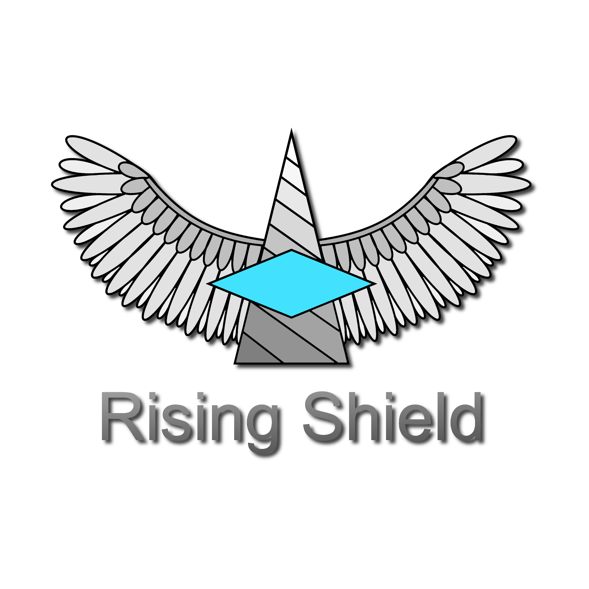

The Rising Shield Multiverse Research Agency is an agency created by rapid to explore the multiverse and research new technology, discover alternate worlds, and make new friends

The Rising Shield Multiverse Research Agency is an agency created by rapid to explore the multiverse and research new technology, discover alternate worlds, and make new friends
RS was founded by rapid and avia, its HQ used to be unihorn labs, until the new HQ was made, a massive structure outside of equestria in a place where the worst lighting storms on the planet are located, four large pillers around the building are connected to the top of the trasmission tower and act as massive grounding rods to prevent the deadly lightning from affecting the building and the people inside.
Rising Shield has 3 main divisions: Technology and Research, Mining and Farming, Transportation and Health.
While RS was founded for exploration of the multiverse, it has grown into many other fields aswell, however the multiverse still remains a large part of the agency.
While rapid and avia are able to use a crystal matrix left by the unihorn group to travel the multiverse, it is limited, and unsafe for anyone else to use, as such a new way of going between universes was created, the "Anti-Spark Multi-Universal Matter Transmission Array" or M.T.A. for short, the M.T.A requires Anti-Spark energy to operate, Anti-Spark is highly unstable and volatile but is the only currently known way to power an M.T.A.
The SIM is an advanced AI mainframe tasked with securing and defending the HQ from threats
SIM controls all of the facility's defenses as well as a few other systems, the main systems it controls are listed below:
Facility wide changeling scanners
Perimeter life sign detector
Primary Defense Shield
Auto turrets
Alarms
Lights (Including emergency lighting)
Security Doors
Intercom and radio Broadcast
Ventilation System
Power Systems
In the event of the SIM turning against us, it can be overidden, powered off, or reconfigured, from the server pit control room, there are also secondary overrides inside rapid and avia's offices
The RTS is an ultra-fast underground train that connects all RS locations in P-4, the current stations are:
RS Head Quarters - (A massive building in the middle of a desert with nothing around)
Unihorn Laboratory - (Rapid's home inside Unihorn Mountain)
Canterlot Station - (Small office inside the mountain range with an exit to Canterlot)
Manehatten Station - (Small office on a street corner in Manehatten)
Mount Aris Testing Site - (Underground testing facility near Mount Aris)
Deep Sea Laboratory - (Big lab on the sea floor)
The RTS train car can only be controlled by a unicorn and can hold 30 ponies and cargo at a top speed of 300 km/h (slowing for turns and stopping for lifts and stations)
These are links to the legacy documentss, which may be outdated but are still provided here anyway
Rising Shield